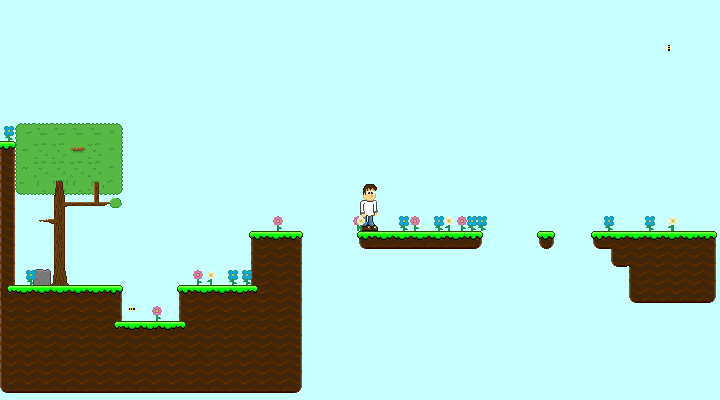

History and Features!
Check out the game versions and features, from the oldest, to the newest!


It all began...
Sometime in November of 2017. I was way down deep into the rabbit hole that is Java. At the time, I was looking for a way to draw things to the screen! No one had taught me, and googling "draw things to screeen java" wasn't helping either. I stumbled apon a series then, named Beginner 2D Game Programming. Not the best name I'll admit, but it got me hooked, and I started following it.
I drew up a little character and put him in my little game I was following along with. But there was a big difference between the tutorial I was following, and the game I was making. The tutorial was for tile games, whereas I had made a platformer.
I believe I had followed the tutorial until Episode 29, then I broke out and just continued on my own. I had some independance however since I started more to skim through episodes by around Episode 20, and didn't fully watch nor thoroughly watched them.

Version 0.1
Then came the first release, the main reason a release happened is that I wanted to be able to play the game outside of Eclipse (the IDE that I use). So I found a way to output it. Another reason why, is that I would put it as a download, in my game log series. If you're wondering what happened to the game log series, I took it down and will probably put it back up sometime in the near future.
Then came the first release, the main reason a release happened is that I wanted to be able to play the game outside of Eclipse (the IDE that I use). So I found a way to output it. Another reason why, is that I would put it as a download, in my game log series. If you're wondering what happened to the game log series, I took it down and will probably put it back up sometime in the near future.
Because I liked it so much, I decided to continue on with it and fix some bug in the previous version. The main bugs were a wall-jumping bug, and a normal jumping bug.
The wall jumping bug would occur right when you jump into a wall. This caused you to fly high up. The other jumping bug made it so you wouldn't always jump a normal hieght. Sometimes you would just jump a few pixels off the ground. The normal jumping bug wasn't fixed until version 0.4.

Version 0.2